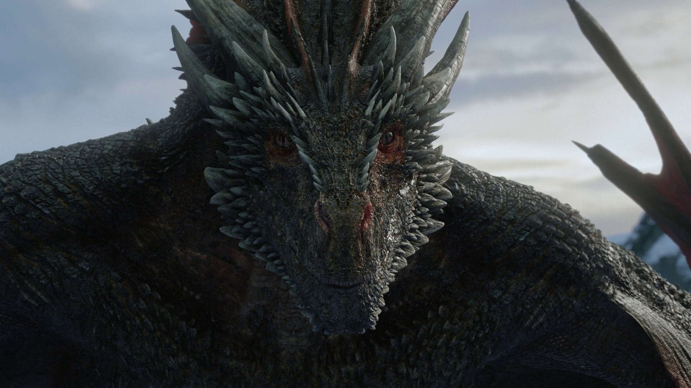

The coolest creature
Drogon is one of the three dragons born in the wastelands beyond Lhazar, along with his brothers Rhaegal and Viserion.
He is named after Daenerys's late husband Khal Drogo.
He can be distinguished by his black and red colored scales, and red-black wings.
He was also Daenerys's personal mount. With the deaths of Viserion and Rhaegal, Drogon is currently the last of his brothers,
hence the only known living dragon in existence.
